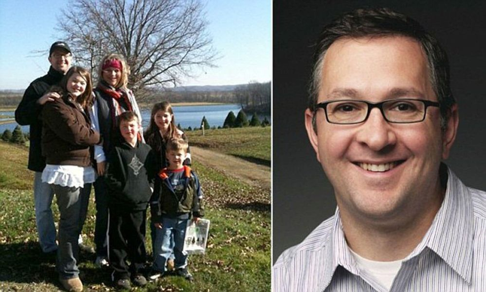

Mobile uploads
Today, May 31, in 2014 Peter Radke, 43, was at a birthday party for one of his teenage daughters in Huntington Beach, Ohio, Saturday night when he noticed a 14-year-old girl who was caught in rough water.
Pete dived into the chilly waters and pushed the teen onto a rock outcropping, where others could pull her to safety.
He disappeared beneath the waves as his children looked on in horror.
'This man is a hero,' a fire chief said in an article.
I knew Pete. He worked here in Akron at Hitchcock Fleming doing the same work I do in digital marketing.
I am absolutely convinced we are meant to dedicate a portion of ourselves for the community. We are very much like bees in that regard.
Both bees and humans are highly social creatures that rely on social interaction to survive and thrive. Bees live in highly organized colonies and communicate with each other constantly, while humans live in complex societies and rely on social interaction to build relationships, exchange ideas, and collaborate on projects.
Simply put, you will be happier if you find a cause larger than yourself to dedicate some time to. I don’t believe sacrificing 100% of yourself to a cause is wise, if happiness is what you are looking to achieve.
I believe in the principle of Ikagai.
Ikigai is a Japanese concept of discovering your purpose through exploring the intersection of what you love, what you're good at, what the world needs, and what you can be paid for. This age-old philosophy offers a structured approach to identifying your purpose and leading a meaningful life.
I have found that I’m much happier when I try to balance all those things.
Pete’s sacrifice is important because I believe most people do very little in the area of doing what the world needs. Our political leaders no longer ask us to think about what we can do for our community. We all just mostly think about ourselves and our nuclear family.
But Pete Radke is asking us to think about our community. His ultimate sacrifice makes us struggle with that complicated idea of giving part of ourselves to people, places and things that we don’t know and have no direct relationship. And most importantly, we do it with no regard for ourselves or even what the outcome will be.
Just do it.
I think the message Pete is sending is to let go and give of yourself no matter what the outcome.
Pet a dog you just met. Hand $5 to the person standing on the corner. Pick up a piece of trash you are walking by. Forgive someone who has wronged you. Be nice to someone who doesn’t “deserve” it.
That’s a the big Pete Radke message. I truly believe it will make you a happier person.